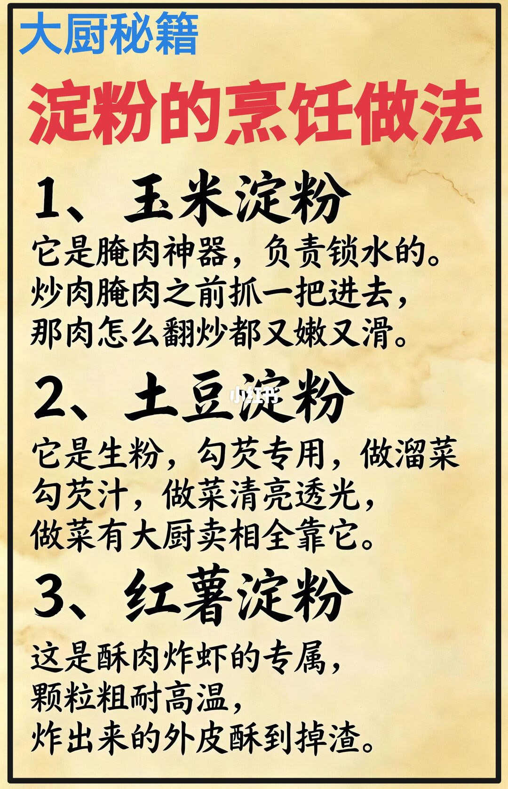

第 1 页：三种淀粉分工

1/1大厨秘籍：玉米淀粉腌肉锁水；土豆淀粉勾芡清亮；红薯淀粉粗粒耐高温炸酥掉渣。
Corn starch marinades lock water; potato starch clears sauces; sweet-potato starch fries crispy.
单页把三类淀粉按场景拆开，避免「生粉」混用导致芡糊或炸皮不对。
文末汇总
核心判断：同叫淀粉，功能按颗粒与糊化行为分岔——腌制保嫩、芡汁透亮、高温脆壳各用其材。
- 腌肉抓玉米淀粉
- 溜菜勾芡用土豆淀粉
- 炸壳换红薯淀粉
以上为原笔记图文观点整理，不是对该主题的全面定论。